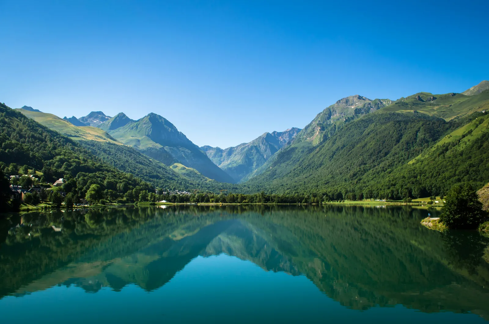

🌊
Lac et village de vallée
Le lac de Génos-Loudenvielle crée une promesse très différente d’un appartement d’altitude : balade, vue, détente, base de loisirs, familles et séjour au calme.
À Loudenvielle, une location saisonnière ne se présente pas comme un simple hébergement de montagne. Le voyageur compare une ambiance de village, le lac de Génos-Loudenvielle, Balnéa, les activités familiales, l’accès Skyvall vers Peyragudes, Val Louron, le vélo, le VTT et les séjours détente. LocPilot aide les propriétaires à rendre cette promesse plus claire, plus visible et moins dépendante d’un seul canal de réservation.
Loudenvielle attire plusieurs profils de voyageurs : familles, séjours bien-être, skieurs, amateurs de vélo, pratiquants VTT, randonneurs, couples en séjour détente et visiteurs qui recherchent une base de vallée plus douce qu’un logement directement en station.

La force de Loudenvielle vient de la superposition des usages : lac, détente, village, activités familiales, accès Skyvall, Peyragudes, Val Louron, vélo, VTT et patrimoine de vallée. Pour un propriétaire, l’enjeu est de rendre cette combinaison immédiatement lisible.
Le lac de Génos-Loudenvielle crée une promesse très différente d’un appartement d’altitude : balade, vue, détente, base de loisirs, familles et séjour au calme.
Balnéa renforce la valeur d’un séjour hors ski : couple, détente, récupération après l’effort, météo moins favorable et séjours courts orientés confort.
Skyvall permet de relier la vallée à Peyragudes en moins de dix minutes. Un bien peut donc vendre l’équilibre entre vie de village et accès rapide à la station.
La proximité de Val Louron permet de parler aux familles, aux débutants et aux voyageurs qui recherchent une montagne plus simple, plus douce et plus rassurante.
Loudenvielle attire des voyageurs qui recherchent autant le confort de vallée, le lac, Balnéa et les activités douces que l’accès ski.
La promesse ne s’arrête pas à l’hiver : VTT, vélo, randonnée, trail, lac et activités estivales renforcent l’attractivité du bien.
Ces données ne garantissent pas la performance d’une location. Elles montrent pourquoi un propriétaire doit relier son bien aux bons usages : lac, bien-être, familles, station, vélo, VTT, randonnée, commerces, équipements et canal direct.
L’office de tourisme présente la Vallée du Louron comme un ensemble de 15 villages typiques, labellisés Pays d’Art et d’Histoire et classés Grand Site Occitanie.
Loudenvielle est présenté comme un village au fond de la vallée du Louron, à 960 m d’altitude, limitrophe de l’Espagne au sud et du lac de Génos-Loudenvielle au nord.
La mairie de Loudenvielle indique que le lac de Génos-Loudenvielle couvre 32 hectares au cœur de la vallée du Louron, avec de nombreuses activités sur ses rives.
La mairie présente Balnéa comme le premier complexe de détente en eau thermale des Pyrénées françaises, au bord du lac et au pied de Peyragudes et de Val Louron.
Source : Mairie de Loudenvielle · Balnéa
Le dossier N’PY hiver 2025-2026 rappelle que l’ascenseur valléen Skyvall relie Peyragudes à Loudenvielle en moins de 10 minutes et a redessiné l’offre touristique été/hiver.
Le dossier N’PY indique pour Peyragudes 392 000 journées skieurs en 2024-2025, 12,6 M€ de chiffre d’affaires et 600 K€ d’investissements pour 2025-2026.
Source : N’PY · chiffres clés Peyragudes
Le dossier N’PY été 2026 positionne Loudenvielle-Peyragudes comme une destination VTT majeure, avec plus de 500 km de sentiers balisés et une étape UCI MTB World Series.
Source : N’PY · dossier été 2026
L’INSEE indique que l’Occitanie atteint 47,2 millions de nuitées estivales en 2025, en hausse de 2,2 %, et que la fréquentation touristique progresse de 4,2 % dans les Pyrénées.
Source : INSEE Occitanie · été 2025
Dans les logements locatifs en ligne, l’INSEE observe une offre encore très dynamique dans les Pyrénées et à Lourdes, avec +9 % de nuits disponibles et +10 % de fréquentation réservée.
Source : INSEE · logements locatifs été 2025
Un bien au bord du lac, proche de Balnéa, au cœur du village, près de Skyvall ou plus isolé dans la vallée ne raconte pas la même expérience. La présentation doit aider le voyageur à comprendre ce qu’il gagne concrètement.
Vue, promenade, activités nautiques, pêche, base de loisirs et séjours famille doivent être mis en avant avec des repères simples et concrets.
Un bien proche de Balnéa peut séduire les couples, les courts séjours, les voyageurs bien-être et les séjours de récupération après ski, vélo ou randonnée.
L’accès rapide à Peyragudes permet de vendre une combinaison forte : confort de vallée, commerces, lac et accès station sans dormir directement en altitude.
Local vélo, parking, lavage, départs d’itinéraires, accès aux sentiers, terrasse et récupération après l’effort deviennent des détails décisifs.
Dans la vallée du Louron, les détails pratiques et visuels comme la vue, l’extérieur, l’accès et le stationnement influencent fortement la perception.
Week-ends, vacances, été, hiver et intersaisons n’ont pas les mêmes attentes : le contenu doit aider à mieux lire ces usages.
Dans une destination attractive, le voyageur compare vite. La différence ne vient pas seulement du tarif, mais de la clarté de l’annonce, de la qualité visuelle, de la promesse locale, du niveau de confort et de la facilité de réservation.
« Appartement à Loudenvielle » ne suffit pas. Il faut expliquer la distance au lac, à Balnéa, à Skyvall, aux commerces, aux départs d’activités et aux zones de stationnement.
Vue, balcon, extérieur, couchages, stationnement, accès facile, local matériel, calme, équipements famille et confort hiver/été doivent être montrés, pas seulement listés.
Les plateformes restent utiles, mais une partie de la demande peut être mieux captée par un canal direct clair, un moteur de réservation propriétaire et une présentation plus premium.
LocPilot n’agit pas comme une agence immobilière et ne manipule pas les fonds. L’accompagnement porte sur la stratégie digitale, la visibilité locale, les outils, la valorisation du bien et la lecture de rentabilité, avec le propriétaire qui reste décisionnaire.
Travailler les bons repères : Loudenvielle, lac de Génos-Loudenvielle, Balnéa, Vallée du Louron, Skyvall, Peyragudes, Val Louron et séjours quatre saisons.
Créer une lecture visuelle premium : vue, accès, extérieur, ambiance vallée, proximité lac, confort intérieur et expérience voyageur.
Structurer calendriers, redirections, moteur de réservation ou synchronisation selon l’écosystème choisi par le propriétaire.
Comparer les périodes, les nuits, le revenu, les frais, la dépendance OTA et les leviers de progression sans promettre un résultat automatique.
Un support dédié peut mieux présenter le logement, le lac, Balnéa, Skyvall, Peyragudes et les conditions de réservation.
LocPilot structure la visibilité, le canal direct et les outils, sans gérer les décisions d’exploitation ni les obligations du propriétaire.
L’objectif est simple : permettre à un propriétaire de passer du constat local aux actions concrètes à mettre en place pour améliorer la visibilité de son bien, structurer ses réservations et réduire sa dépendance aux plateformes.
Replacer Loudenvielle dans la stratégie globale des destinations montagne, lac, bien-être, vallée et quatre saisons du département.
Lire la page 65Relier Loudenvielle à la station familiale du Louron, aux séjours neige douce, aux familles et à la lecture montagne accessible.
Voir Val LouronConnecter Loudenvielle à Peyragudes, au Skyvall, au ski, au VTT, aux séjours sportifs et à la vallée du Louron.
Voir PeyragudesComparer Loudenvielle avec la vallée d’Aure : village, thermalisme, station, familles, services et séjours montagne quatre saisons.
Voir Saint-LaryRelier Loudenvielle à une autre station forte des vallées voisines, avec altitude, neige, haute montagne et séjours ski.
Voir Piau-EngalyVoir comment un bien peut être mieux compris par Google, les voyageurs et les moteurs IA.
Lire le guide SEO/GEOStructurer un canal complémentaire aux OTA, sans confusion ni promesse excessive.
Lire le guide directSynchroniser calendriers, canaux, prix et messages sans perdre en clarté opérationnelle.
Lire le guide outilsComprendre le périmètre d’intervention LocPilot et les responsabilités qui restent côté propriétaire.
Lire la FAQOui. Loudenvielle fait partie des localités prioritaires de LocPilot dans les Hautes-Pyrénées. L’accompagnement porte sur la visibilité locale, le canal direct, les outils, la valorisation du bien et la lecture de rentabilité.
Non. Loudenvielle combine le lac de Génos-Loudenvielle, Balnéa, les séjours bien-être, les familles, le vélo, le VTT, les randonnées, Val Louron, Peyragudes et l’accès Skyvall. La destination fonctionne sur une logique quatre saisons.
Pas forcément. Un bien à Loudenvielle doit souvent raconter une promesse de vallée : lac, village, bien-être, commerces, Balnéa, départs d’activités et accès rapide à Peyragudes via Skyvall. C’est différent d’un appartement directement situé en station.
Oui, surtout si le bien est bien présenté et relié à la destination : lac, Balnéa, vallée du Louron, Skyvall, Peyragudes, Val Louron, familles, vélo et séjours détente. Le canal direct ne remplace pas forcément les plateformes, mais il peut réduire la dépendance et mieux protéger la marge.
Non. LocPilot ne garantit ni les réservations, ni la position dans Google ou dans les moteurs génératifs. L’accompagnement vise à améliorer la lisibilité du bien, la structure de visibilité, le canal direct, les outils et la lecture de rentabilité.
Faisons un premier point sur votre emplacement, vos visuels, vos annonces, vos canaux de réservation et les leviers les plus pertinents à clarifier pour renforcer votre visibilité locale dans la vallée du Louron.